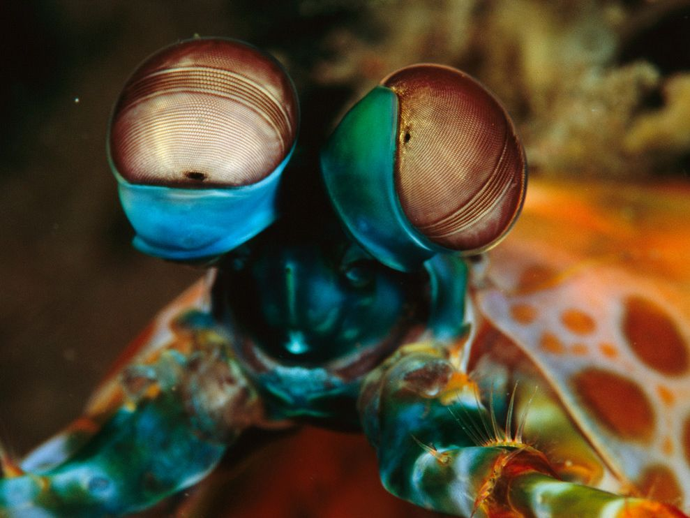
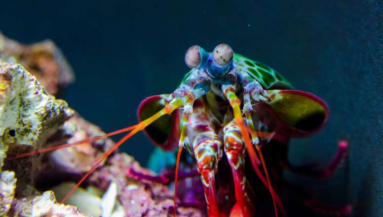
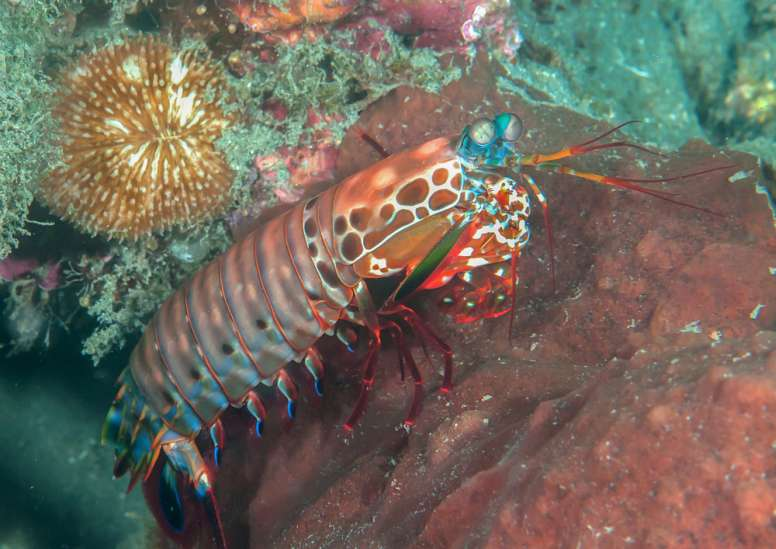
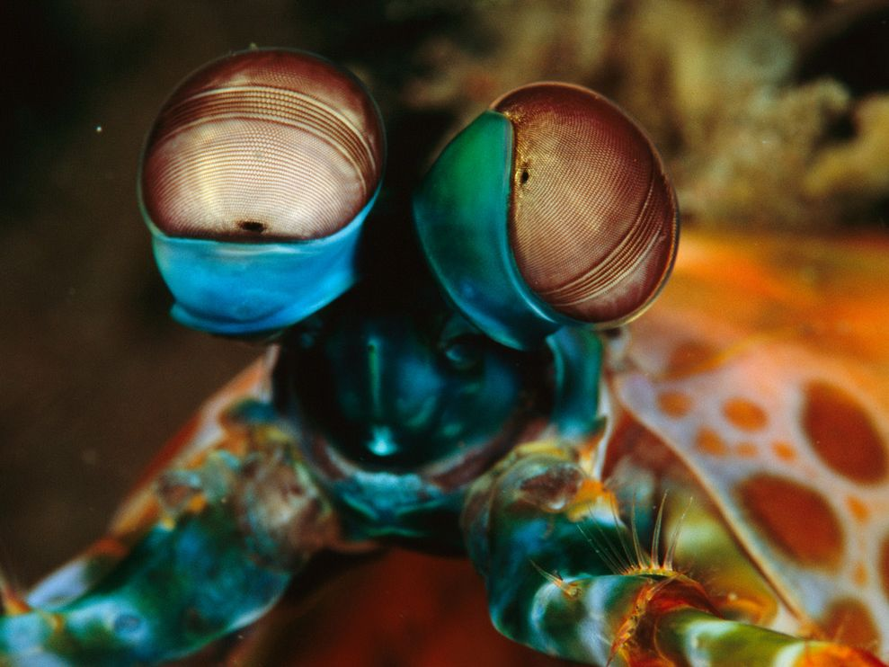
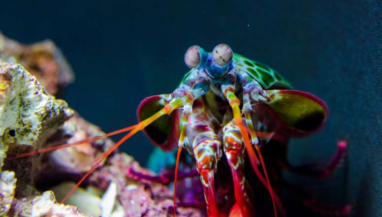
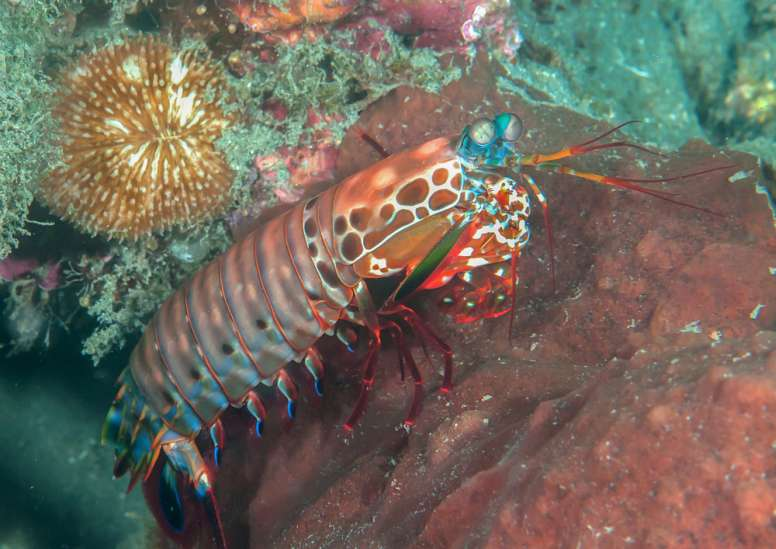

Fatos sobre o Stomatopoda
Informações Gerais
Nome Científico
Odontodactylus scyllarus
Reino
Animalia
Filo
Arthropoda
Subfilo
Crustacea
Classe
Malacostraca
Subclasse
Hoplocarida
Ordem
Stomatopoda
5 vezes mais cores que humanos

Os seres vivos conseguem ver coisas através de receptores de luz (fotorreceptores), dentre eles os bastonetes (que captam luminosidade) e os cones (que captam cor).
O Stomatopoda possui uma quantidade exorbitante de dezesseis cones de luz. Isso é uma quantidade mais de cinco vezes maior que a dos seres humanos, que possuem apenas três cones, e ainda está muito a frente do segundo colocado, as borboletas, que possuem 5 cones.
Ataques que chegam a ferver água

Os Stomatopodas possuem duas apêndices na frente de seu corpo, que servem como um tipo de arma. Numa briga, esses apêndices conseguem chegar numa velocidade acima de 80km/h, algo próximo da velocidade de um tiro de um rifle calíbre 22. Nesses momentos, a água em volta do crustáceo começa a ferver, num processo chamado de supercavitação.
Duas disciplinas de luta

As apêndices mencionadas anteriormente podem ter uma variação de espécime a espécime, mas de forma geral, todo espécime da ordem Stomatopoda pode estar em um de dois grupos.
Os do primeiro grupo, conhecidos como "perfuradores", têm uma apêndice mais fina e farpada, que pode ser usada para esfaquear presas de pele menos resistente.
Já os do outro grupo, conhecidos como "esmagadores", possuem apêndices mais desenvolvidos, parecidos com um bastão, que eles usam para espancar suas presas e deixá-las em pedaços.
Existem há mais de 400 milhões de anos

O Stomatopoda começou a se divergir da classe Malacostraca e se tornar isolada há mais de 400 milhões de anos, quase 200 milhões de anos antes dos dinosauros.
Fontes
Informações Gerais
| Nome Científico | Odontodactylus scyllarus |
| Reino | Animalia |
| Filo | Arthropoda |
| Subfilo | Crustacea |
| Classe | Malacostraca |
| Subclasse | Hoplocarida |
| Ordem | Stomatopoda |
5 vezes mais cores que humanos
Os seres vivos conseguem ver coisas através de receptores de luz (fotorreceptores), dentre eles os bastonetes (que captam luminosidade) e os cones (que captam cor).
O Stomatopoda possui uma quantidade exorbitante de dezesseis cones de luz. Isso é uma quantidade mais de cinco vezes maior que a dos seres humanos, que possuem apenas três cones, e ainda está muito a frente do segundo colocado, as borboletas, que possuem 5 cones.
Ataques que chegam a ferver água
Os Stomatopodas possuem duas apêndices na frente de seu corpo, que servem como um tipo de arma. Numa briga, esses apêndices conseguem chegar numa velocidade acima de 80km/h, algo próximo da velocidade de um tiro de um rifle calíbre 22. Nesses momentos, a água em volta do crustáceo começa a ferver, num processo chamado de supercavitação.
Duas disciplinas de luta
As apêndices mencionadas anteriormente podem ter uma variação de espécime a espécime, mas de forma geral, todo espécime da ordem Stomatopoda pode estar em um de dois grupos.
Os do primeiro grupo, conhecidos como "perfuradores", têm uma apêndice mais fina e farpada, que pode ser usada para esfaquear presas de pele menos resistente.
Já os do outro grupo, conhecidos como "esmagadores", possuem apêndices mais desenvolvidos, parecidos com um bastão, que eles usam para espancar suas presas e deixá-las em pedaços.
Existem há mais de 400 milhões de anos
O Stomatopoda começou a se divergir da classe Malacostraca e se tornar isolada há mais de 400 milhões de anos, quase 200 milhões de anos antes dos dinosauros.